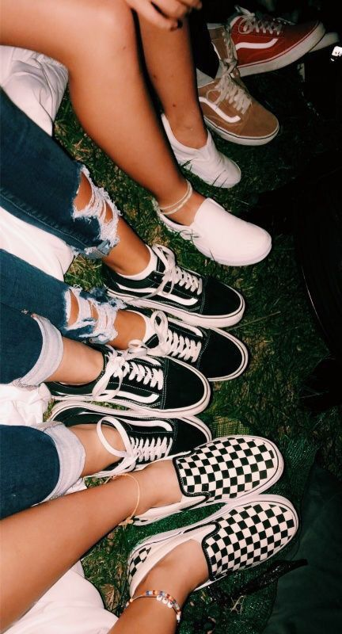

En Kicks Republic, entendemos que las zapatillas no son solo un complemento, sino una declaración de estilo. Desde que iniciamos, nuestro objetivo ha sido ofrecer a nuestros clientes las mejores opciones de calzado urbano, con un enfoque especial en las últimas tendencias y la cultura streetwear. Nos enorgullecemos de seleccionar cuidadosamente cada modelo para garantizar que tanto la calidad como el diseño cumplan con los más altos estándares. En Kicks Republic, encontrarás zapatillas que combinan funcionalidad comodidad y estilo, ideales tanto para el día a día como para ocasiones especiales. Celebramos la diversidad del estilo urbano y la autenticidad personal. Nos esforzamos por crear una comunidad de amantes de las zapatillas que compartan nuestra pasión por el diseño y la moda. Únete a nosotros y descubre por qué somos tu destino de confianza para el mejor calzado.
